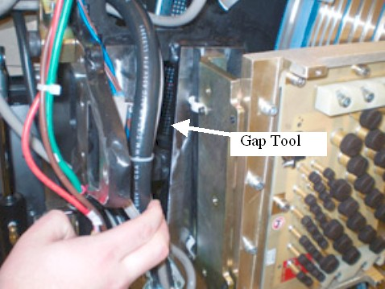
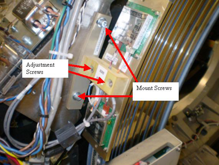

Operating Documentation
Direction 5193574-800, Rev# 22
LightSpeed 7.X Service Methods
Module Version 2.0, Version Date 4/21/09
Operating Documentation |
| Required Persons | Preliminary Reqs | Procedure | Finalization |
|---|---|---|---|
| 1 | NA | 60 mins | 30 mins |
This procedure defines the methods to adjust the receiver and check transmission statistics to verify proper operation.
| Last Revised: | February 9, 2009 |
| Item | Qty | Effectivity | Part# | Manufacturer | |
|---|---|---|---|---|---|
| Standard FE Toolkit | 1 | - | - | - | |
| 3 and 4 mm hex wrenches | 1 | - | - | - | |
| Adjustment Tool (On gantry) | 1 | - | - | - | |
| ||||
| Electric Shock. | ||||
| May cause serious injury or Death. | ||||
| Unless disabled, High Voltages are present on the slip ring. Power on the slip ring includes 750VDC. |
| ||||
| Follow ALL required safety and PPE procedures customary for your organization when working on this product. | ||||
| Condition | Reference | Effectivity |
|---|---|---|
Only trained service personnel should service the GE CT Scanner. | - | - |
This document describes the steps necessary to properly adjust the position of the Receiver antenna above the emitter traces on the rotating slip ring. Accurate placement of the antenna is important to achieve the optimal data transfer performance and to avoid contact between the ring and the stationary antenna. The optimal position of the antenna above the emitter traces on the ring is 1.41 mm height (.060 inches), and centered. Under normal circumstances, the position of the antenna should never need adjustment. Only adjust if there are indications of interference. Under no circumstances should the antenna be allowed to contact the rotating components.
Remove the gantry right side cover.
| ||||
| Electric Shock. | ||||
| May cause serious injury or Death. | ||||
| Unless disabled, High Voltages are present on the slip ring. Power on the slip ring includes 750VDC. |
Disable gantry Axial drive, HVDC and 120 VAC service switches from the service switch panel.
Perform appropriate LOTO procedures to lock out power to the gantry.
Remove mylar scan window and gantry left side, top and rear covers. Connect the E-stop cable removed from the back cover to the gantry terminator in preparation for later steps.
Refer to Replacement → Gantry → Enclosure → (Cover Removal Procedures).
Remove the top slip ring cover to access the receiver.
Pull out the gap tool from the gantry frame storage location.
Illustration 1: Gap Tool Location

Loosen the Mount screws (5 mm hex wrench) for the receiver assembly to adjust for antenna to receiver gap.
Illustration 2: Receivers

The antenna should now be loose above the emitter. Insert the adjustment tool between the receivers and the antenna on the ring. The tool should fit snugly. The desired result is to space the antenna above the emitter, at a height of 1.41 mm (.060 inches) above the emitter with the gap tool as the gage for this spacing.
Press slightly on the top of the antenna as the adjustment screws are tightened.
Torque the M6 mount screws to:
Table 1: Mount Screws
| 7.9 N-m | 5.8 lb-ft | 70 lb-in | 80 kg-cm |
Carefully slide the adjustment tool from between the antenna and the emitter.
Loosen the adjustment screws (4 mm hex wrench), reference Illustration 2, and adjust the RF Receiver assembly such that the top and bottom alignment holes line up with the center line of the RF antennas on the slip ring.
Illustration 3: Receiver Alignment Top hole

Illustration 4: Receiver Alignment Top hole

While holding the position of the antenna, tighten the alignment screws and torque to.
Table 2: M5 Adjustment Screw Torque
| 4.6 N-m | 3.4 lb-ft | 41 lb-in | 47 kg-cm |
| ||||
| Potential for Ring Damage. Do not rotate the gantry with the adjustment tool installed. Damage to the delicate PCB traces will result. There is no method to repair ring boards in the field - a ring replacement would be necessary. | ||||
Inspect the air-gap between the antenna and the ring by rotating the gantry in small increments of about 3 feet (1 meter). Look for clearances between the emitter and the antenna. While rotating the ring, check that the emitter trace is aligned with the antenna. During rotation, no parts of the antenna should contact the emitter surface.
| NOTE: | It will be hard to rotate the ring without power applied but this step intentionally leaves power off due to the exposed slip rings. |
The stationary and rotating components must never touch, even with the gantry tilted.
The run-out of the platter slip ring traces should not exceed 0.83 mm axially, and 0.81 mm radially. If the ring appears to shift with respect to the receivers, use the Platter Replacement procedure to check ring run out.
Especially check clearances near the slip ring antenna emitter solder and PCB connections.
Install the top slip ring cover before restoring any power.
Restore power to the system by removing LOTO.
| ||||
| Electric Shock. | ||||
| May cause serious injury or Death. | ||||
| High Voltages are present on the slip ring. Power on the slip ring includes 750VDC. |
| ||||
| Crush hazard | ||||
| UNEXPECTED GANTRY ROTATION CAN CAUSE SERIOUS INJURY. | ||||
| VERIFY THAT ALL PERSONNEL ARE CLEAR OF THE SYSTEM BEFORE TURNING ON Axial drive. Stay clear of rotating assembly with covers off. |
Enable gantry 120 VAC, HVDC and Axial Drive to prepare for testing slip ring transmission path.
Verify proper operation by running verification scans. Verification procedure should consist of:
Run 5 stationary and 5 rotational scans with x-ray. The technique is not important. It is important to exit the exam, because this triggers the “DIP Stats” update.
From the Common Service Desktop, Diagnostics tab, select RTS viewer
Choose the DIP selection and view each scans DIP stats. There should be no FEC Failures or Sync Errors.
Exam Number:00263,ENDEXAM
Date :Fri Mar 21 02:05:33 2008
Offset Data Bytes 0 Bytes
Image Data Bytes 0 Bytes
Number of Das Data Buffer Overruns 0 Overruns
abort 0 Aborts
FEC Attempts 0 Bytes
Bit Error Rate 0.0 Rate
FEC Failures 0 Failures
Num of SYNC Errors 0 Errors
View interpolations 0 Interpolations
| ||||
| Crush hazard | ||||
| UNEXPECTED GANTRY ROTATION CAN CAUSE SERIOUS INJURY. | ||||
| NEVER SERVICE THE GANTRY WITH THE AXIAL DRIVE ENABLED. |
If there are transmission issues disable Axial Drive and HVDC from the service switch panel, then check the power to the transmitter and receiver and alignments.
Transmitter power supply measurements
The Transmitter Power comes from the rotating 48V power supply by way of the ORP. A 48V feed goes to the ORP and then to the transmitter.
Measure the DC voltage on the wires at the ORP connector leading to the Transmitter. The specification is +48 volts DC ± 5.0 volts.
Receiver power supply measurements
Locate the Receiver Power supply next to the GFI breaker behind the Service Switch Panel.
Measure the DC voltage on the wires leading to the Receiver. The specification is +15 volts DC, ± 2.0 volts. Use indicator LEDs to ensure proper operation.
Turn off Axial Drive, HVDC, and 120 VAC service switches from the service switch panel.
Replace the gantry covers (except right side cover). Re-install the mylar window.
Refer to Replacement → Gantry → Enclosure → (Cover Removal Procedures).
Turn on 120 VAC, Axial Drive and HVDC service switches from the service switch panel. Enable table drives and install the gantry right side cover.
Perform System scanning test from the Functional Checks section to verify scanner operation.